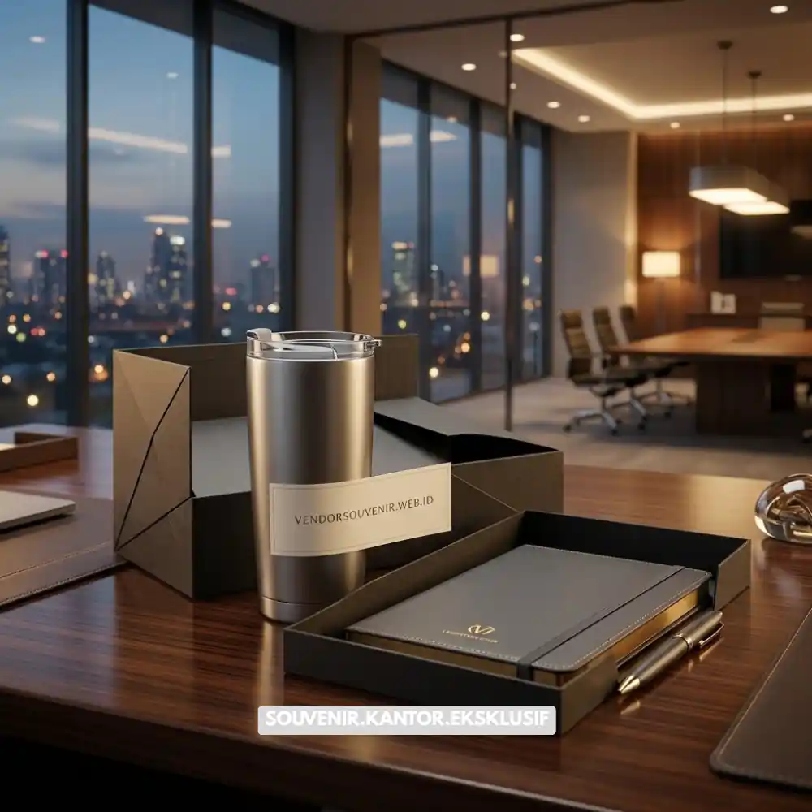

Daftar Isi
Set hadiah perusahaan adalah paket souvenir korporat berisi kombinasi produk pilihan seperti mug, notebook, tumbler, dan aksesori kerja yang dikemas rapi untuk klien, mitra, atau karyawan.
Set ini digunakan perusahaan untuk memperkuat hubungan bisnis, merayakan momen penting, dan menampilkan identitas brand secara profesional. VendorSouvenir.web.id menyediakan set hadiah perusahaan custom logo dengan proses pemesanan cepat dan hasil premium.
- Set hadiah perusahaan cocok untuk klien, mitra bisnis, karyawan, dan acara korporat.
- Isi set dapat disesuaikan dengan anggaran, mulai dari paket ekonomis hingga premium.
- Custom logo memperkuat brand recall dan kesan profesional perusahaan.
- Waktu produksi umumnya 5 hingga 14 hari kerja tergantung jumlah dan kompleksitas desain.
- Pemesanan dalam jumlah besar biasanya mendapatkan harga per unit yang lebih efisien.
Apa Itu Set Hadiah Perusahaan dan Mengapa Perusahaan Membutuhkannya
Set hadiah perusahaan adalah kumpulan barang fungsional yang dirangkai menjadi satu paket hadiah bertema korporat, biasanya mencakup alat tulis, perlengkapan minum, dan aksesori kerja. Konsep ini berbeda dari souvenir tunggal karena menghadirkan pengalaman unboxing yang lebih berkesan bagi penerima.
Kebutuhan terhadap set hadiah perusahaan meningkat seiring tren perusahaan yang ingin membangun hubungan jangka panjang dengan klien dan menjaga loyalitas karyawan. Survei dari berbagai asosiasi promotional product di Amerika Serikat pada periode 2023-2024 secara konsisten menunjukkan bahwa mayoritas penerima hadiah korporat mengingat nama perusahaan pemberi hadiah dalam waktu enam bulan setelah menerimanya, menjadikan pemberian hadiah sebagai strategi branding yang efektif dan bertahan lama.
Selain aspek branding, set hadiah perusahaan juga berfungsi sebagai bentuk apresiasi formal dalam berbagai momen seperti ulang tahun perusahaan, penutupan tahun fiskal, penandatanganan kontrak baru, dan perayaan pencapaian target. Perusahaan yang konsisten memberikan hadiah berkualitas cenderung dipandang lebih profesional dan dipercaya oleh mitra bisnisnya.
Kapan Waktu Tepat Memberikan Set Hadiah Perusahaan
Set hadiah perusahaan paling efektif diberikan pada momentum yang relevan dengan hubungan bisnis. Beberapa momen yang umum digunakan perusahaan antara lain penyambutan klien baru, perayaan hari jadi perusahaan, apresiasi akhir tahun, hingga hadiah untuk peserta seminar atau konferensi korporat.
Pemberian hadiah pada momen yang tepat membuat pesan branding lebih mudah diterima karena penerima berada dalam kondisi emosional yang positif. VendorSouvenir.web.id membantu perusahaan menentukan jenis set hadiah yang sesuai dengan momen tersebut agar pesan yang disampaikan tetap relevan dan berkesan.

Set Hadiah Welcome Kit
Bagaimana Cara Memilih Isi Set Hadiah Perusahaan yang Tepat
Memilih isi set hadiah perusahaan yang tepat dimulai dari mengenali profil penerima, tujuan pemberian hadiah, dan anggaran yang tersedia. Kombinasi produk yang relevan dengan aktivitas kerja penerima cenderung lebih dihargai dibandingkan barang yang bersifat umum.
Untuk klien korporat, kombinasi seperti notebook kulit, pulpen premium, dan tumbler stainless umumnya dianggap sesuai karena mencerminkan kesan profesional. karyawan internal, set hadiah dapat lebih fleksibel dengan tambahan produk personal seperti tas kerja atau power bank.
Perusahaan juga perlu mempertimbangkan konsistensi tema dan warna kemasan agar set hadiah terlihat menyatu dan mencerminkan identitas brand secara utuh. Kemasan yang rapi turut menentukan persepsi kualitas hadiah, bahkan sebelum penerima membuka isinya.
Kombinasi Produk yang Paling Diminati Perusahaan
Beberapa kombinasi produk yang paling sering dipilih perusahaan meliputi paket tulis-menulis, paket minum premium, dan paket kerja lengkap. Paket tulis-menulis biasanya berisi notebook dan pulpen dengan cetak logo. Paket minum premium mengombinasikan tumbler atau mug dengan kemasan kotak eksklusif. Paket kerja lengkap menggabungkan beberapa kategori sekaligus untuk kesan yang lebih mewah.
VendorSouvenir.web.id menyediakan berbagai kombinasi produk siap pakai maupun kustomisasi penuh sesuai kebutuhan spesifik perusahaan, sehingga tim procurement tidak perlu menyusun kombinasi dari nol.
Apa Manfaat Custom Logo pada Set Hadiah Perusahaan
Custom logo pada set hadiah perusahaan berfungsi memperkuat identitas visual brand setiap kali produk digunakan oleh penerima dalam aktivitas sehari-hari. Logo yang tercetak rapi pada produk fungsional menciptakan eksposur brand berulang tanpa biaya tambahan untuk media promosi konvensional.
Penelitian dari lembaga riset promotional product di Amerika Serikat pada 2023 mencatat bahwa produk promosi dengan logo cenderung disimpan penerima dalam jangka waktu yang cukup lama, memberikan eksposur brand yang berkelanjutan dibandingkan iklan digital yang cepat terlupakan.
Selain nilai branding, custom logo juga menunjukkan tingkat perhatian dan profesionalisme perusahaan terhadap detail. Hadiah dengan identitas brand yang jelas memberi kesan bahwa perusahaan mempersiapkan hadiah tersebut secara khusus, bukan sekadar barang generik.
Teknik Custom Logo yang Umum Digunakan
Beberapa teknik cetak logo yang umum digunakan pada set hadiah perusahaan meliputi laser engraving untuk material kayu dan logam, sablon atau printing untuk produk berbahan kain dan plastik, serta emboss atau debossing untuk produk kulit seperti notebook. Setiap teknik memiliki karakteristik hasil akhir yang berbeda sehingga pemilihannya perlu disesuaikan dengan jenis material produk.
VendorSouvenir.web.id memiliki tim produksi yang dapat merekomendasikan teknik cetak paling sesuai berdasarkan material yang dipilih agar hasil logo tampil tajam, rapi, dan tahan lama.
Berapa Kisaran Biaya Set Hadiah Perusahaan Custom Logo
Biaya set hadiah perusahaan custom logo umumnya dipengaruhi oleh jenis dan jumlah produk dalam satu set, bahan yang digunakan, teknik cetak logo, serta jumlah pemesanan. Secara umum, semakin banyak jumlah pesanan, semakin efisien harga per unit yang diperoleh perusahaan.
Paket ekonomis biasanya berisi satu hingga dua item dengan bahan standar, sedangkan paket premium mencakup tiga item atau lebih dengan bahan pilihan seperti kulit asli atau stainless steel berkualitas tinggi. Kemasan tambahan seperti box eksklusif atau paper bag custom juga memengaruhi total biaya secara keseluruhan.
Untuk mendapatkan estimasi biaya yang akurat, perusahaan disarankan berkonsultasi langsung karena harga dapat bervariasi tergantung kondisi pasar bahan baku dan spesifikasi desain yang diminta.
Faktor yang Membuat Harga Lebih Efisien
Beberapa langkah dapat membantu perusahaan mendapatkan harga set hadiah yang lebih efisien tanpa mengurangi kualitas, di antaranya memesan dalam jumlah besar sekaligus, memilih kombinasi produk dengan bahan yang seragam, serta merencanakan pemesanan jauh sebelum tenggat acara agar tidak dikenakan biaya percepatan produksi.
Tim VendorSouvenir.web.id siap membantu perusahaan menyusun kombinasi set hadiah yang sesuai anggaran tanpa mengorbankan kesan premium yang diinginkan.
Kesalahan Umum saat Memilih Set Hadiah Perusahaan
Beberapa kesalahan yang sering terjadi antara lain memilih produk tanpa mempertimbangkan relevansi dengan penerima, mengabaikan kualitas kemasan, serta memesan mendekati tenggat waktu sehingga membatasi pilihan kustomisasi. Kesalahan lain yang cukup umum adalah tidak melakukan pengecekan sampel logo sebelum produksi massal, yang berisiko menimbulkan hasil cetak tidak sesuai ekspektasi.
Menghindari kesalahan ini penting agar investasi hadiah perusahaan memberikan dampak branding yang maksimal, bukan sekadar formalitas seremonial.
Tips Memastikan Set Hadiah Perusahaan Tampil Profesional
Untuk memastikan hasil akhir tampil profesional, perusahaan sebaiknya menentukan tema warna yang konsisten dengan identitas brand, memilih kemasan yang kokoh dan rapi, serta melakukan proofing desain logo sebelum produksi dimulai. Menyertakan kartu ucapan personal juga dapat meningkatkan kesan hangat dan profesional pada hadiah yang diberikan.
VendorSouvenir.web.id menyediakan layanan konsultasi desain gratis untuk membantu perusahaan memastikan setiap detail set hadiah sesuai dengan identitas brand sebelum masuk ke tahap produksi massal.
Set hadiah perusahaan adalah investasi branding yang efektif untuk memperkuat hubungan dengan klien dan karyawan sekaligus meningkatkan eksposur brand secara berkelanjutan. Pemilihan produk yang relevan, kualitas custom logo yang rapi, dan perencanaan waktu pemesanan yang matang menjadi kunci keberhasilan strategi ini.
VendorSouvenir.web.id siap membantu perusahaan Anda merancang set hadiah perusahaan custom logo yang premium, sesuai anggaran, dan siap kirim tepat waktu. Hubungi VendorSouvenir.web.id sekarang untuk konsultasi gratis dan dapatkan penawaran terbaik untuk kebutuhan hadiah korporat Anda.

Solusi Hadiah Korporat Eksklusif
Pesan Set Hadiah Perusahaan Custom Logo
Kami siap membantu mewujudkan hadiah korporat terbaik untuk mitra bisnis dan karyawan
Anda.
Dapatkan produk premium dengan kemasan eksklusif.
Dapatkan penawaran harga terbaik untuk pesanan massal!
FAQ
Apa itu set hadiah perusahaan?
Set hadiah perusahaan adalah paket souvenir korporat berisi kombinasi beberapa produk fungsional yang dikemas untuk diberikan kepada klien, mitra, atau karyawan sebagai bentuk apresiasi dan strategi branding.
Berapa minimal pemesanan set hadiah perusahaan?
Minimal pemesanan bervariasi tergantung jenis produk dan teknik cetak logo yang dipilih, sehingga sebaiknya dikonfirmasi langsung sesuai kebutuhan spesifik perusahaan.
Berapa lama proses produksi set hadiah perusahaan custom logo?
Proses produksi umumnya berlangsung antara 5 hingga 14 hari kerja, tergantung jumlah pesanan dan kompleksitas desain logo yang diminta.
Apakah bisa request desain kemasan khusus?
Bisa, VendorSouvenir.web.id menyediakan layanan konsultasi dan desain kemasan sesuai identitas brand perusahaan.
Bagaimana cara memesan set hadiah perusahaan di VendorSouvenir.web.id?
Perusahaan dapat menghubungi tim VendorSouvenir.web.id melalui website untuk konsultasi kebutuhan, penentuan kombinasi produk, dan estimasi biaya sebelum proses produksi dimulai.
Maroon Souvenir
Partner Corporate Gift terpercaya di Indonesia. Berpengalaman melayani ratusan perusahaan sejak 2018.
Lihat Portofolio Kami